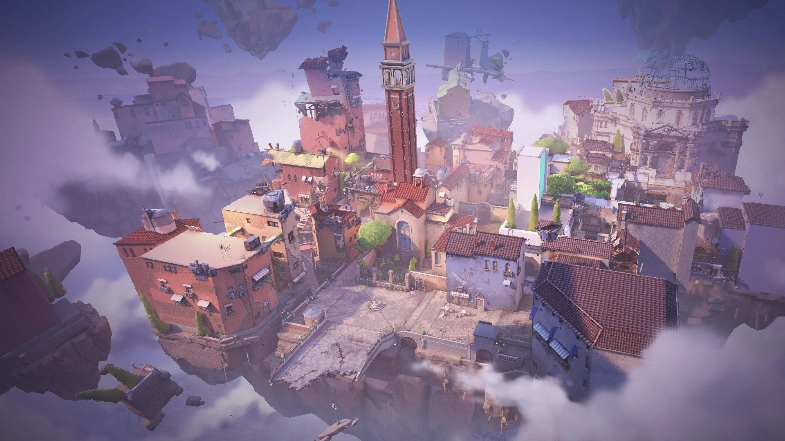
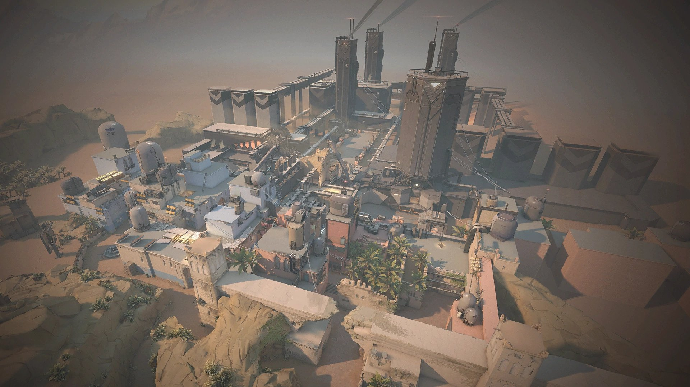
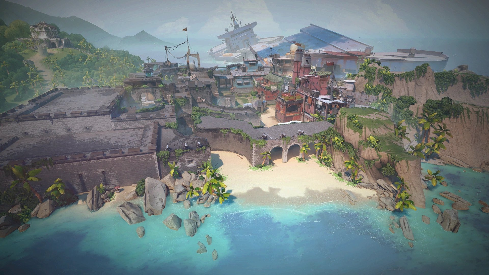
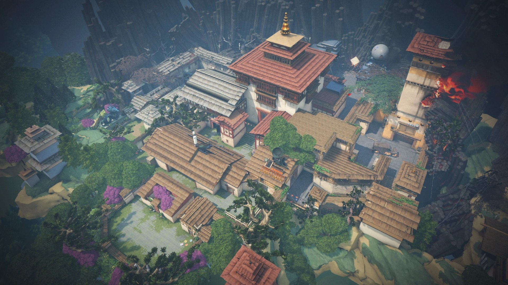

Valorant is a free-to-play first-person hero shooter developed and published by Riot Games, for Microsoft Windows. First teased under the codename Project A in October 2019, the game began a closed beta period with limited access on April 7, 2020, followed by an official release on June 2, 2020. The development of the game started in 2014. Valorant takes inspiration from the Counter-Strike series of tactical shooters, borrowing several mechanics such as the buy menu, spray patterns, and inaccuracy while moving.
Valorant is a team-based first-person hero shooter.Players play as one of a set of Agents, characters designed based on several countries and cultures around the world.In the main game mode, players are assigned to either the attacking or defending team with each team having five players on it. Agents have unique abilities, each requiring charges, as well as a unique ultimate ability that requires charging through kills, deaths, orbs, or objectives. Every player starts each round with a "classic" pistol and one or more "signature ability" charges.Other weapons and ability charges can be purchased using an in-game economic system that awards money based on the outcome of the previous round, any kills the player is responsible for, and any objectives completed. The game has an assortment of weapons including secondary guns like sidearms and primary guns like submachine guns, shotguns, machine guns, assault rifles and sniper rifles.There are automatic and semi-automatic weapons that each have a unique shooting pattern that has to be controlled by the player to be able to shoot accurately.It currently offers 18 agents to choose from.They are Brimstone, Viper, Omen, Cypher, Sova, Sage, Phoenix, Jett, Raze, Breach, Reyna, Killjoy, Skye, Yoru, Astra, KAY/O, Chamber, and Neon.
| Game mode: |
Objective: |
| Unrated: |
In the standard non-ranked mode, the match is played as best of 25 - the first team to win 13 rounds wins the match. The attacking team has a bomb-type device called the Spike. They must deliver and activate the Spike on one of the multiple specified locations (bomb sites). If the attacking team successfully protects the activated Spike for 45 seconds it detonates, destroying everything in a specific area, and they receive a point.If the defending team can deactivate the spike, or the 100-second round timer expires without the attacking team activating the spike, the defending team receives a point.If all the members of a team are eliminated before the spike is activated, or if all members of the defending team are eliminated after the spike is activated, the opposing team earns a point.If both teams win 12 rounds, sudden death occurs, in which the winning team of that round wins the match, differing from overtime for competitive matches. Additionally, if after 4 rounds, a team wishes to forfeit that match, they may request a vote to surrender. If the vote is unanimous, the winning team gets all the victory credit for every round needed to bring them to 13, with the forfeiting team receiving losing credit.A team gets only two chances to surrender: one as the attackers and the other as the defenders. |
| Spike Rush: |
In the Spike Rush mode, the match is played as best of 7 rounds - the first team to win 4 rounds wins the match. Players begin the round with all abilities fully charged except their ultimate, which charges twice as fast as in standard games. All players on the attacking team carry a spike, but only one spike may be activated per round. Guns are randomized in every round and every player begins with the same gun. Ultimate point orbs in the standard game are present, but there are multiple power-up orbs instead. |
| Competitive: |
Competitive matches are the same as unranked matches with the addition of a win-based ranking system that assigns a rank to each player after 5 games are played. Players are required to win at least 10 unrated matches before being able to play competitive matches.In July 2020, Riot introduced a "win by two" condition for competitive matches, where instead of playing a single sudden death round at 12-12, teams will alternate playing rounds on attack and defense in overtime until a team claims victory by securing a two-match lead. Each overtime round gives players the same amount of money to purchase guns and abilities, as well as approximately half of their ultimate ability charge. After each group of two rounds, players may vote to end the game in a draw, requiring 6 players after the first set, 3 after the second, and thereafter only 1 player to agree to a draw. The competitive ranking system ranges from Iron to Radiant. Every rank except for Radiant has 3 tiers. Immortal & Radiant are reserved for top 500 players in which there is a number associated to their rank allowing players in the top 500 to have a metric in which they can compare how they rank up to others at their level. |
| Deathmatch: |
The Deathmatch mode was introduced on August 5, 2020.14 players enter a 9-minute free-for-all match and the first person to reach 40 kills or the player who has the most kills when time is up wins the match. Players spawn in with a random agent, and all abilities are disabled during the match which indulges pure gunplay. Green health packs drop on every kill, which set the player at maximum health, armor, and ammunition, unless the player is using a machine gun, which only gives the player an additional 30 bullets. |
| Escalation: |
The Escalation gamemode was introduced on February 17, 2021and is similar to the "gungame" concept found in Counter-Strike and Call of Duty: Black Ops, though it is team-based rather than free-for-all with 5 players on each team. The game will pick a random selection of 12 weapons to move through. As with other gungame versions, a team needs to get a certain number of kills to advance to the next weapon and the weapons get progressively worse as the team moves through them.There are two winning conditions, if one team successfully goes through all 12 levels, or if one team is on a higher level than the opposing team within 10 minutes. Just like Deathmatch, players spawn in as a random agent, unable to use abilities, as the gamemode is set for pure gun fights. Though, abilities like Sova's shock darts, Raze's boom bot, and rocket launcher, are abilities that everyone gets to use as a weapon. After a kill, green health packs drop, which replenishes the player's health, armor, and ammo to its maximum. The gamemode also has auto respawns on, respawning players in random locations around the map. |
| Replication: |
The Replication gamemode went live on May 11, 2021. During the agent select, players vote on which agent they would want to play as. At the end of the time, or after everyone has voted, the game randomly selects one of the player's votes. The entire team will then play as that agent, even if one of the players has not unlocked that agent. It is a best of nine, with the players switching sides after the fourth round. Players can buy guns and shields with a pre-set number of credits. Abilities are pre-bought. Weapons and shields are reset every round. |
| Snowball Fight: |
The Snowball Fight gamemode was released on December 15, 2020. It is a Team Deathmatch game mode, with 50 kills to win. Abilities are not allowed to be used, and players spawn in as a random agent. The only weapon available is the snowball launcher, which is an instant kill, but slow, and uses a projectile-based arc. There is infinite ammo. Throughout the game a "portal" will spawn, delivering gifts, which each contain a random power up. |





AGENTS:
- Duelist
Duelists mainly create space for their team while entering onto a site, giving their teammates information, and making entering a site easier. Their abilities tend to consist of flashes which blind enemies, and movement-based abilities that allow for them to cover large distances faster than other agents. This type of ability kit allows for duelists to shine best when they are able to catch players off guard and get impact frags.
- Sentinel
Sentinels are the defensive line, which specializes in locking down sites and protecting teammates from enemies. Their abilities mainly consist of static 'objects' that are obstacles to the enemies. These objects can give the team valuable information and/or deal damage.
- Initiator
Initiators plan out the offensive pushes. Initiators specialize in breaking through defensive enemy positions. Initiators' abilities can consist of flashes but also abilities that can reveal the location of enemies. This information allows for attackers to know where enemies are and make taking a site easier.
- Controller
Controllers specialize in "slicing up dangerous territory to set their team up for success."They use their abilities to create coverage or clear out areas of space with crowd control.To help their team enter into enemy territory, their abilities can consist of smokes, slows, stuns, and flashes. With their smokes, controllers can control sightlines on the map, making it safer to move through the map without getting seen.
REFERENCES:
FACEBOOK VALORANT
INSTRAGRAM VALORANT
TWITTER VALORANT